Angry Villagers
Fear and desperation can turn ordinary Barovians into a dangerous mob.
Explore the monsters, spirits, guardians, and other figures found in the dark world of Ravenloft. Artwork is loaded directly from the game's monster library. Descriptions are brief, spoiler-light introductions rather than combat statistics.
Fear and desperation can turn ordinary Barovians into a dangerous mob.
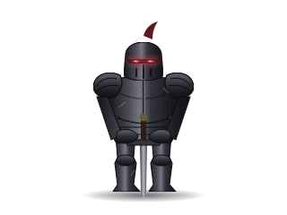
An empty suit of armor brought to life by supernatural magic.

A terrifying dragon-shaped guardian animated by dark forces.
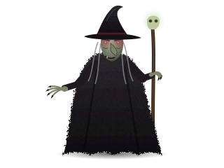
A practitioner of sinister magic who may curse or torment unwary travelers.

A nocturnal creature of the castle and its shadowed surroundings.

An unsettling feline whose presence may be more than coincidence.

A foul undead predator with a dreadful stench and paralyzing touch.

A restless spirit lingering where tragedy or unfinished business remains.

A corpse-eating undead creature whose claws can leave victims helpless.
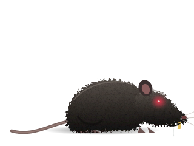
An oversized scavenger lurking in cellars, ruins, and dark passages.
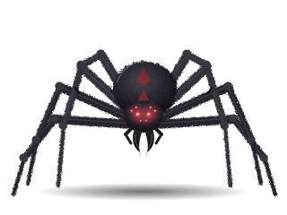
A large web-spinning hunter that traps prey in forgotten places.
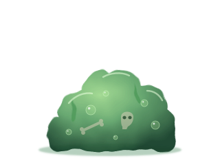
A corrosive dungeon hazard that can consume organic matter.
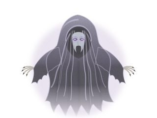
A haunting apparition whose terrible cry inspires dread.
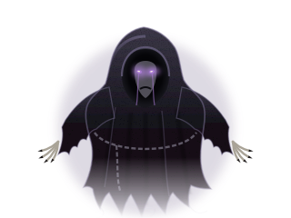
A supernatural guardian associated with grief and the secrets of Ravenloft.
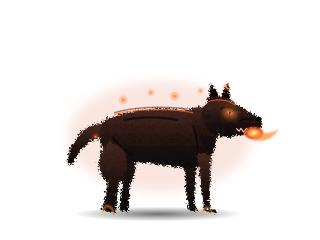
A fiendish canine with a burning breath and a relentless hunting instinct.

A rare friendly apparition that may offer guidance amid the darkness.

An immense arachnid that makes narrow passages and webs especially perilous.

A towering metal construct, extraordinarily difficult to stop by force.

A fearsome supernatural steed wreathed in an infernal presence.
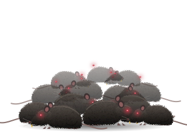
A seething mass of rats that overwhelms travelers through sheer numbers.
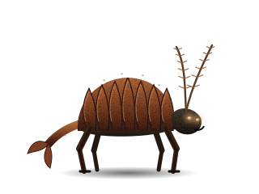
An unusual creature whose touch threatens metal arms and armor.
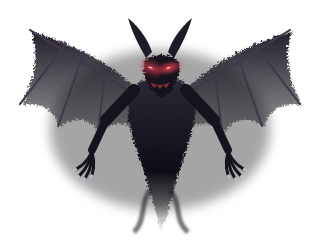
A sinister entity that moves through darkness and preys on the vulnerable.
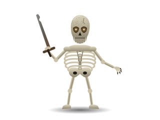
Animated bones driven by necromantic power rather than living will.

An incorporeal undead horror that drains strength from the living.

The formidable vampire lord whose shadow hangs over Castle Ravenloft.

A decaying undead servant whose persistence makes it difficult to put down.

A lurking predator that disguises itself as part of the dungeon floor.

A vampiric figure combining eerie elegance with deadly hunger.

An undead predator with unnatural strength, charm, and a thirst for blood.

A lesser vampire bound to the influence of a more powerful master.

A traveler of Barovia; an encounter may bring conversation rather than combat.
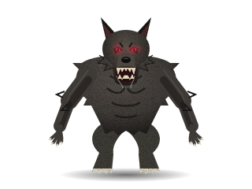
A cursed shapeshifter capable of taking on a fearsome wolf-like form.

A malevolent undead warrior that can sap the life from its victims.
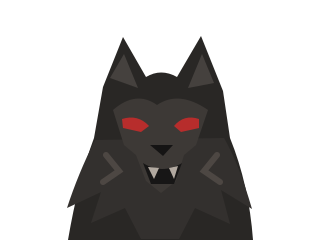
A watchful predator of the Svalich Woods, especially dangerous in a pack.

A cunning, dangerous wolf-like beast often more intelligent than it appears.

A shadowy undead apparition that threatens the life force of the living.

A reanimated corpse that advances with unnatural endurance.